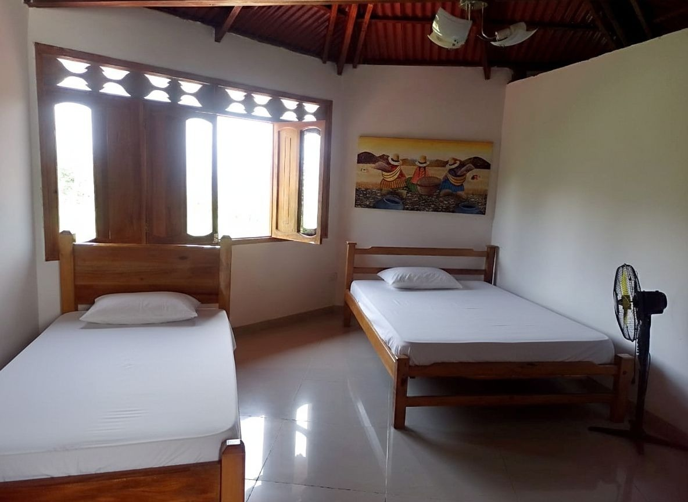

El sentido como motor de vida
Exploramos la logoterapia como el camino para descubrir un propósito que sostenga la existencia, transformando el vacío en una vida con significado...

Un enfoque integral que combina ciencia, psicología y espiritualidad para tu bienestar y recuperación definitiva.

Elige Nova Vida. es un espacio internacional de acompañamiento integral orientado a la superación personal, el bienestar emocional y el desarrollo humano consciente. Acompañamos a personas de diferentes países que desean transformar su vida, reconectar con su propósito y construir un proyecto vital saludable y sostenible. Nuestro enfoque integra ciencia, psicología, espiritualidad terapéutica y hábitos de vida saludables, dentro de un entorno natural, seguro, confidencial y cuidadosamente diseñado para favorecer procesos profundos de transformación persona.
Terapia cognitiva y emocional personalizada.
Protocolos clínicos validados y supervisión médica.
Los pilares que sostienen nuestro compromiso con cada persona que confía en nosotros.
Creemos firmemente que cada persona es única e irrepetible. Por ello, diseñamos procesos de acompañamiento totalmente personalizados, teniendo en cuenta la historia de vida, el contexto personal y familiar, las necesidades emocionales, el estado físico y los objetivos vitales de cada individuo. No aplicamos modelos estandarizados: cada camino de superación se construye de manera consciente, respetuosa y ajustada a la realidad de quien lo vive.
La confianza es la base de todo proceso de transformación. Garantizamos una protección absoluta de la información personal, conforme a la legislación vigente en materia de privacidad y protección de datos. Actuamos con total discreción, preservando el anonimato y la intimidad de cada persona, creando un entorno seguro donde es posible expresarse con libertad y sin temor.
Promovemos un espacio libre de discriminación, donde todas las personas son acogidas con el mismo respeto y dignidad, sin distinción de raza, sexo, edad, orientación, nacionalidad o creencias. Fomentamos un trato humano, cercano y empático, reconociendo el valor intrínseco de cada ser humano y su derecho a encontrar sentido y bienestar en su vida.
Entendemos a la persona como un todo. Nuestro enfoque integral abarca mente, cuerpo, emociones y espiritualidad, reconociendo que el equilibrio auténtico surge de la armonía entre estas dimensiones. Diseñamos rutas de trabajo coherentes y profundas, que permiten una transformación real y sostenida, abordando las causas y no solo los síntomas.
En Elige Nova Vida acompañamos procesos de reconstrucción personal y fortalecimiento del proyecto de vida mediante programas estructurados, confidenciales y profundamente transformadores. Cada tratamiento se diseña de forma individual, respetando el ritmo, la historia y las necesidades emocionales de cada persona.

Programa orientado a restablecer el equilibrio personal, fortalecer la conciencia emocional y desarrollar herramientas internas para una vida libre de dependencia.

Acompañamiento intensivo enfocado en la estabilidad emocional, la disciplina interior y la reconstrucción del proyecto de vida.

Proceso progresivo con supervisión profesional, orientado a restablecer el equilibrio físico, mental y emocional.

Intervención integral para recuperar el autocontrol, la estabilidad económica y la confianza personal.

Programa especializado en el fortalecimiento emocional, el autocontrol y la construcción de relaciones sanas y conscientes.

Abordaje integral y simultáneo de las dificultades emocionales y conductuales, desde un enfoque humano, ético y profesional.
Un camino estructurado hacia la libertad definitiva.
Estabilización inicial, contención emocional y creación de hábitos saludables.
Identificación y modificación de conductas y pensamientos que generan dependencia o malestar.
Desarrollo de autoestima, recursos internos, autonomía y sentido de propósito.
Reintegración familiar, social y profesional, con proyección a largo plazo.
Un entorno natural y tranquilo diseñado para favorecer la introspección y el descanso.



Elige Nova Vida cuenta con un equipo humano multidisciplinario, ético y altamente calificado, conformado por profesionales nacionales e internacionales con sólida trayectoria en psicología, acompañamiento emocional, bienestar integral y desarrollo humano.
Cada profesional aporta formación académica, experiencia clínica y una profunda vocación de servicio, trabajando desde modelos terapéuticos actualizados, prácticas basadas en la evidencia y metodologías humanistas.

En Elige Nova Vida reconocemos la dimensión espiritual como un pilar esencial del bienestar integral del ser humano. Entendemos la espiritualidad como un espacio íntimo de conexión, sentido y coherencia interior, abordado siempre desde una perspectiva respetuosa, consciente y no dogmática.
Nuestros objetivos espirituales se orientan a acompañar procesos profundos de sanación interior, reconciliación personal y construcción de sentido, integrando la dimensión espiritual con el bienestar emocional, psicológico y relacional.
Exploramos la logoterapia como el camino para descubrir un propósito que sostenga la existencia, transformando el vacío en una vida con significado...

Exploramos la inteligencia emocional para transformar el impulso en consciencia, encontrando el equilibrio necesario para liderar nuestra propia vida...

Exploramos el trastorno límite de la personalidad desde la regulación y la autocompasión, transformando la intensidad emocional en una base sólida para la estabilidad y el autoconocimiento...